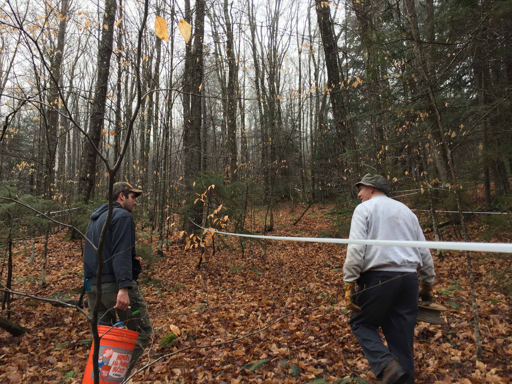
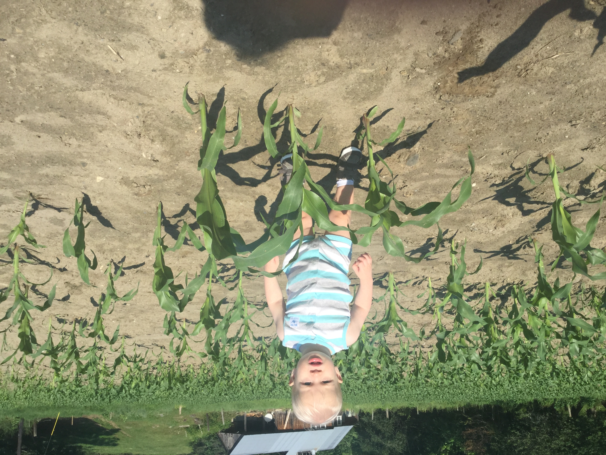
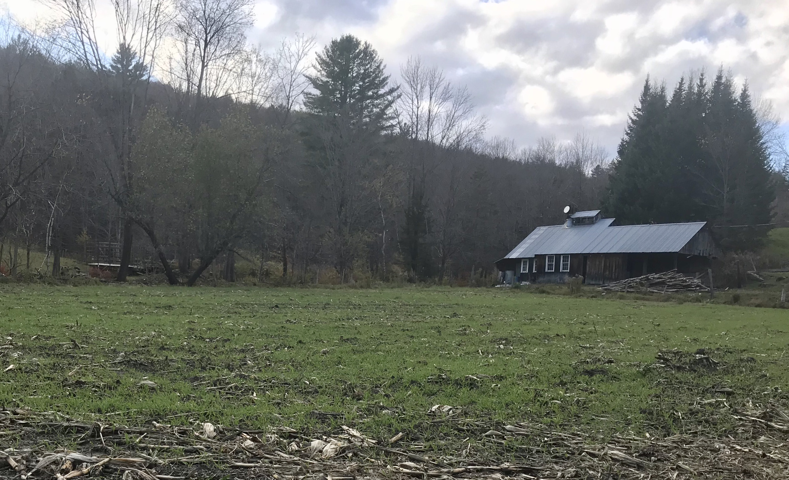

The Dotons certainly have their hands full. As with most farmers, the work day starts early, around 4:30 a.m., when most of us are just entering deep sleep.
Clean the barn and do the morning milking and feedin
Breakfast around 7:30 a.m., haying the rest of the day if the weather allows and nothing else is more pressing. And of course, afternoon milking.
And then call it a day around 6:00 p.m.
That is, unless there is still some daylight and more hay to mow or snow to plow.
In addition to dairy farming, the Dotons do a fair amount of sugaring...

...and they also sell vegetables, especially corn, at their farm stand.

Even when the growing season is winding down, there's still work and care going into the land. To do their part for clean water and to stabilize the soil, the Dotons plant crops like winter rye to keep the environment as healthy as possible.

If it sounds tedious, it isn't. There are new challenges every day if not every hour, and Paul often has to leave the farm on other business. Paul was a member of the Board of Yankee Farm Credit and he has spent a lot of time explaining the difficulties dairy farmers face. Paul is a past member of the DMI Board of Directors, which has oversight of the National Dairy Promotion program. Currently he is a member of the Agri-Mark/Cabot board of directors. He is a founding member of the Connecticut River Watershed Farmers Alliance, an organization that practices land stewardship for clean waterways, productive landscapes, and the economic sustainability of our agricultural community.
If that weren't enough, Paul is a Justice of the Peace for Barnard. If you want a down home wedding ceremony, Paul's your guy. Oh, and he is also the Town Moderator for Barnard town meetings.

Life is good at Doton Farm.